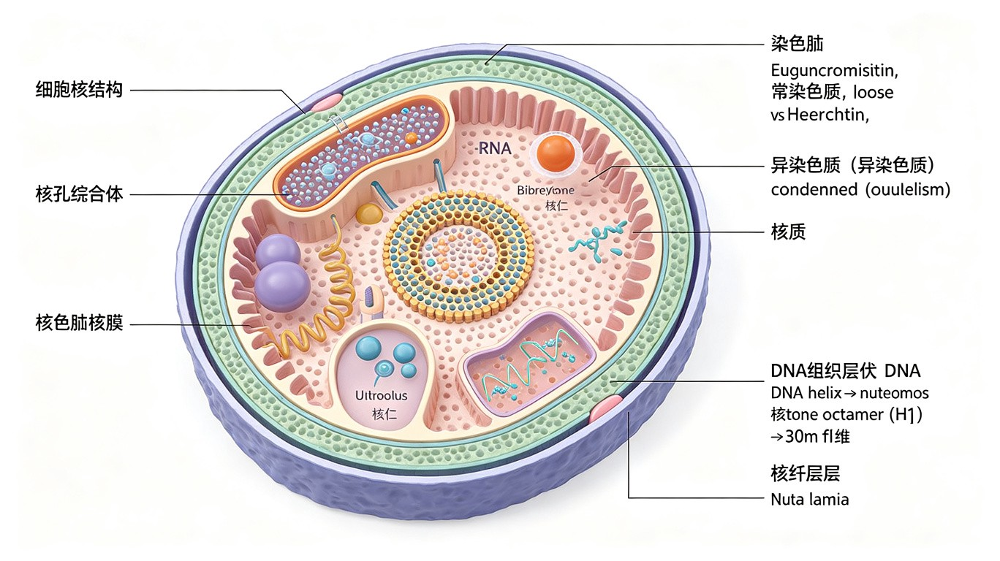

细胞核概述与核被膜
细胞核（nucleus）是真核细胞最显著的特征结构，是遗传信息储存、复制和转录的场所。除哺乳动物成熟红细胞和高等植物筛管分子外，所有真核细胞均有细胞核。细胞核通常呈球形或卵圆形，一般一个细胞只有一个核（肝细胞、骨骼肌细胞等可有多个核）。核质比（N/C ratio）通常约为 1:10。
核被膜（nuclear envelope）由两层膜组成：外核膜（outer nuclear membrane）和内核膜（inner nuclear membrane），中间为核周隙（perinuclear space，约 20-50 nm）。外核膜与 rER 膜连续，表面附着核糖体。内核膜内侧有核纤层（nuclear lamina）。核被膜上分布着核孔复合体（NPC），是核质之间物质交换的通道。
核被膜的功能：①将遗传物质与细胞质分隔，为 DNA 复制和 RNA 转录提供稳定的微环境；②使基因表达程序具有严格的阶段性和区域性——转录在核内进行，翻译在细胞质核糖体上完成（真核细胞特有的时空分隔）；③控制核质之间的物质和信息交流——通过 NPC 进行选择性运输。

核孔复合体 (NPC)
核孔复合体（nuclear pore complex, NPC）是核被膜上的大型蛋白质复合体，分子量约 120 MDa（在酵母中约 66 MDa），由约 30 种不同的核孔蛋白（nucleoporin, Nup）组成，每个 NPC 含约 500-1000 个蛋白质分子。NPC 是核质之间物质交换的唯一通道。
NPC 的结构：NPC 呈八重对称的圆柱形结构，包括：胞质环（cytoplasmic ring，含胞质纤丝）、核质环（nuclear ring，含核篮/核笼结构）、中央通道（central channel，含 FG 重复序列的核孔蛋白形成选择性通透屏障）。整个核孔直径为 80-120 nm，有效亲水通道直径约 9-10 nm（最大可达 12.5 nm）。
NPC 的双功能和双向性：
- 被动扩散：分子量 < 40 kDa 或直径 < 5 nm 的小分子/离子可自由通过。
- 主动运输：大分子（蛋白质、RNA 等）需要核定位信号（NLS）或核输出信号（NES）介导的主动运输，为信号识别和载体介导的过程，消耗 GTP（Ran GTPase），表现出饱和动力学特征。
- 双向运输：入核——组蛋白、核糖体蛋白、DNA/RNA 聚合酶、转录因子等；出核——mRNA（mRNP）、tRNA、核糖体亚基（40S 和 60S）等。
核输入机制（NLS 介导的入核运输）：
- 含有NLS（核定位信号，nuclear localization signal）的"货物"蛋白被 importin α 识别并结合。NLS 通常是一段或两段富含碱性氨基酸（Lys, Arg）的短序列，如经典的 SV40 大 T 抗原 NLS（PKKKRKV）。
- importin α-货物复合体与 importin β 结合，形成三聚体。
- importin β 与 NPC 的 FG 重复序列核孔蛋白相互作用，引导复合体通过 NPC 进入核内。
- 在核内，RanGTP 与 importin β 结合，使复合体解离，货物释放。
- importin α 返回细胞质（由 exportin CAS + RanGTP 介导），importin β 直接与 RanGTP 结合返回细胞质。
- 在细胞质中，RanGAP（Ran GTPase 激活蛋白）激活 Ran 的 GTPase 活性，将 RanGTP 水解为 RanGDP，释放 importin 供下一轮使用。
核输出机制（NES 介导的出核运输）：含有NES（核输出信号，nuclear export signal，富含亮氨酸的疏水序列）的货物蛋白在核内与 exportin（如 CRM1）和 RanGTP 结合形成三聚体，通过 NPC 出核。在细胞质中，RanGTP 被 RanGAP 水解为 RanGDP，复合体解离，货物释放。RanGDP 通过 NTF2 转运回核内，在核内被 RanGEF（RCC1）重新装载 GTP 再生为 RanGTP。
Ran 梯度：RanGTP 在核内高浓度（因 RanGEF/RCC1 定位于核内），RanGDP 在细胞质高浓度（因 RanGAP 定位于细胞质）。这一 RanGTP 梯度是核质运输方向性的关键。
核纤层与核骨架
核纤层（nuclear lamina）是位于内核膜内侧的纤维网状结构，由核纤层蛋白（lamin）组成。核纤层蛋白属于 V 型中间纤维蛋白，是唯一存在于细胞核内的中间纤维蛋白。
核纤层蛋白的类型：
- A 型 lamin：lamin A 和 lamin C（由 LMNA 基因通过可变剪接产生）。在分化细胞中表达。lamin A 前体 prelamin A 需经过 CAAX 基序的修饰（法尼基化→蛋白水解→甲基化）和 ZMPSTE24 内切酶的最终切割。
- B 型 lamin：lamin B1 和 lamin B2，在所有细胞中普遍表达，是细胞生存所必需的。B 型 lamin 永久保持法尼基修饰，帮助核纤层锚定在内核膜上。
核纤层的功能：①维持细胞核的形态和机械稳定性；②为染色质提供锚定位点（核纤层与染色质通过 lamin 相关蛋白 LAP、emerin 等相互作用）；③在有丝分裂中，核纤层蛋白的磷酸化导致核纤层解体，去磷酸化使核纤层重建（核膜重建的关键步骤）。
核纤层蛋白病变（laminopathies）：LMNA 基因突变导致多种疾病，包括 Hutchinson-Gilford 早老症（HGPS，progeria，prelamin A 突变导致异常核形态）、Emery-Dreifuss 肌营养不良症、扩张型心肌病等。
核骨架（nuclear matrix/nucleoskeleton）是细胞核内的纤维蛋白网络，为 DNA 复制、转录和 RNA 加工提供空间支架。核骨架包括核基质蛋白（如 NuMA）、核纤层蛋白和核内 actin 等。DNA 通过 MAR（核基质附着区，matrix attachment region）与核骨架结合。核骨架在染色体构建过程中对 DNA 超螺旋化的稳定起重要作用。
染色质与染色体
染色质（chromatin）是间期细胞核中 DNA 与蛋白质的复合体，是遗传信息的载体。在有丝分裂期，染色质高度凝缩形成可见的染色体（chromosome）。染色质和染色体是同一物质在细胞周期不同阶段的两种形态。
染色质的化学组成：
- DNA：占染色质质量的 30-40%。每个未复制的染色体含 1 个 DNA 分子。
- 组蛋白（histone）：占染色质蛋白质的约一半，富含碱性氨基酸（Lys 和 Arg），带正电荷，与带负电荷的 DNA 非特异性结合。分为 5 种：H1（连接组蛋白）、H2A、H2B、H3、H4。核心组蛋白（H2A, H2B, H3, H4）形成八聚体（各 2 个分子），DNA 缠绕其上形成核小体核心。组蛋白在进化上极其保守（如豌豆和牛的 H4 仅差 2 个氨基酸）。
- 非组蛋白（non-histone protein）：种类繁多，包括 DNA 聚合酶、RNA 聚合酶、转录因子、染色质重塑复合体、高迁移率族蛋白（HMG 蛋白）等。具有组织和种属特异性。
- 少量 RNA：与染色质结构和基因调控相关。
核小体结构与染色质包装：
核小体（nucleosome）是染色质的基本结构单位。每个核小体由核心组蛋白八聚体（H2A, H2B, H3, H4 各 2 个）+ 缠绕其上的 147 bp DNA（约 1.7 圈左手超螺旋）组成。相邻核小体之间由连接 DNA（linker DNA，约 20-80 bp，因物种和细胞类型而异）连接。H1 结合在核小体核心颗粒外侧和连接 DNA 上，帮助稳定染色质高级结构。
染色体包装的五级层次：
- 一级结构：核小体串珠结构（11 nm 纤维，DNA 组装比约 1/7）。
- 二级结构：螺线管（solenoid，30 nm 纤维），每圈约 6 个核小体，由 H1 介导。DNA 组装比约 1/40-1/50。
- 三级结构：30 nm 纤维与非组蛋白骨架结合形成侧环（loop domain），每个侧环长约 90 kb，约 50 nm。DNA 组装比约 1/1000-1/2000。人类染色体约有 2000 个环区。
- 四级结构：侧环进一步折叠压缩，形成 700 nm 的染色单体纤维。
- 五级结构：染色单体进一步压缩形成中期染色体（1400 nm），DNA 组装比约 1/10000。
着丝粒（centromere）和端粒（telomere）是染色体的重要功能元件。着丝粒由重复 DNA 序列（α-卫星 DNA）和 CENP 蛋白组成，是动粒（kinetochore）的组装位点。端粒由重复序列（脊椎动物 TTAGGG）组成，通过端粒酶（telomerase）维持长度，保护染色体末端不被降解和融合。
常染色质与异染色质
根据间期细胞核中染色质的形态和染色特性，可分为常染色质（euchromatin）和异染色质（heterochromatin）。
常染色质：折叠疏松、凝缩程度低，处于伸展状态，碱性染料染色时着色浅。DNA 组装比约 1/2000 到 1/1000。具有转录活性的染色质一般为常染色质。常染色质位于核的内部区域。
异染色质：凝缩程度高，染色深。分为两种：
- 组成型异染色质（constitutive heterochromatin）：在所有细胞类型中始终处于凝缩状态，通常含有高度重复的 DNA 序列（卫星 DNA），位于着丝粒、端粒和近着丝粒区域。一般不转录，富含 H3K9me3 和 HP1 蛋白。
- 兼性异染色质（facultative heterochromatin）：在特定发育阶段或特定细胞类型中由常染色质凝缩形成。最经典的例子是巴氏小体（Barr body）——雌性哺乳动物体细胞中失活的那条 X 染色体。兼性异染色质富含 H3K27me3 和 Polycomb 蛋白。
巴氏小体与 X 染色体失活：1949 年 Murray Barr 在雌猫神经元中发现核膜内侧的深染小体。Mary Lyon 于 1961 年提出 Lyon 假说：雌性哺乳动物体细胞中一条 X 染色体随机失活，失活发生在胚胎发育早期，失活是随机的（父源或母源），但一旦确定就在后代细胞中稳定遗传。失活由Xist 基因（X-inactive specific transcript）转录的 lncRNA（~17 kb）介导，Xist RNA 覆盖在将要失活的 X 染色体上，招募 Polycomb 复合体（PRC2）沉积 H3K27me3，导致染色质凝缩。Xist 由 XIC（X 失活中心）编码。
核仁
核仁（nucleolus）是间期细胞核中最明显的结构，无膜包被，是 rRNA 合成（转录）和核糖体亚基组装的场所。核仁的大小和数量与细胞的蛋白质合成活性相关——蛋白质合成旺盛的细胞（如分泌细胞、肿瘤细胞）核仁大而明显。
核仁的结构：
- 纤维中心（fibrillar center, FC）：含有 rRNA 基因（rDNA）所在的染色体区域——核仁组织区（NOR, nucleolar organizer region）。人类 NOR 位于 5 对近端着丝粒染色体（13, 14, 15, 21, 22）的次缢痕处。rDNA 基因在 NOR 中以串联重复方式排列，每个重复单元含 18S, 5.8S, 28S rRNA 的编码序列。RNA 聚合酶 I 在 FC 和 DFC 交界处进行 rRNA 转录。
- 致密纤维组分（dense fibrillar component, DFC）：围绕 FC 的致密纤维区域，是新合成的 rRNA 前体（pre-rRNA）积累和初步加工的场所。
- 颗粒组分（granular component, GC）：核仁的外围区域，由正在组装中的核糖体亚基前体颗粒组成。是核糖体亚基成熟和组装的最终阶段。
核仁的功能：①rRNA 的转录（由 RNA 聚合酶 I 负责，5S rRNA 由 RNA 聚合酶 III 在核质中转录后进入核仁）；②rRNA 前体的加工（切割、甲基化、假尿苷化等修饰，由 snoRNP 介导）；③核糖体亚基的组装——5S rRNA 与 28S, 5.8S rRNA 和核糖体蛋白组装成 60S 大亚基，18S rRNA 与核糖体蛋白组装成 40S 小亚基，然后分别通过 NPC 输出到细胞质。
本节必背考点
- 核被膜：双层膜，外膜与 rER 连续，内膜内侧有核纤层。NPC 直径 80-120 nm，由 ~30 种核孔蛋白组成。
- 核质运输：NLS（碱性）→ importin α/β 入核；NES（亮氨酸）→ exportin/CRM1 出核。RanGTP 梯度驱动方向性。
- 核纤层：lamin A/C（LMNA 基因）和 lamin B。有丝分裂中磷酸化解体。早老症=LMNA 突变。
- 染色质：组蛋白 5 种（H1 + 核心八聚体），核小体=147 bp DNA + 八聚体。五级包装：11 nm→30 nm→侧环→700 nm→1400 nm。
- 常/异染色质：常染色质（疏松，转录活性）vs 异染色质（组成型=始终凝缩，兼性型=巴氏小体/Xist）。
- 核仁：FC（NOR/rDNA）+ DFC（rRNA 加工）+ GC（核糖体亚基组装）。RNA 聚合酶 I 转录 rRNA。NOR 位于 13/14/15/21/22 号染色体。
补充内容：表观遗传学与染色质重塑
表观遗传学（epigenetics）研究在不改变 DNA 序列的情况下，基因表达的可遗传变化。主要机制包括：DNA 甲基化、组蛋白修饰、染色质重塑和非编码 RNA。
DNA 甲基化：在 DNA 甲基转移酶（DNMT）催化下，CpG 二核苷酸中胞嘧啶的 5 位碳被甲基化（5mC）。CpG 岛（CpG island）通常位于基因启动子区域，其甲基化通常导致基因沉默（如 X 染色体失活、基因组印记）。DNA 甲基化在 DNA 复制后由 DNMT1（维持甲基转移酶）传递到子链，实现表观遗传的稳定传递。
组蛋白修饰：组蛋白 N 端尾部可发生多种共价修饰：
- 乙酰化（acetylation，赖氨酸）：中和正电荷，减弱组蛋白与 DNA 的相互作用，使染色质开放（常染色质状态）。由 HAT（组蛋白乙酰转移酶）催化，HDAC（组蛋白去乙酰化酶）去除。通常与转录激活相关。
- 甲基化（methylation，赖氨酸/精氨酸）：效应因修饰位点而异——H3K4me3（转录激活，启动子区）、H3K9me3（异染色质形成，HP1 结合）、H3K27me3（Polycomb 介导的基因沉默）、H3K36me3（转录延伸区）。
- 磷酸化（phosphorylation，丝氨酸/苏氨酸）：H3S10ph 与有丝分裂染色质凝缩相关；H2AX（γ-H2AX）磷酸化标记 DNA 双链断裂位点。
- 泛素化（ubiquitination）：H2A 泛素化（H2AK119ub）与 Polycomb 介导的基因沉默相关。
染色质重塑复合体（chromatin remodeling complex）：利用 ATP 水解能量移动核小体位置或改变核小体结构，使 DNA 序列暴露。SWI/SNF 复合体是代表性染色质重塑复合体，在转录调控和 DNA 修复中起重要作用。
相分离（Phase Separation）与无膜细胞器
相分离（phase separation，又称液-液相分离，LLPS）是近年来细胞生物学的重大突破：生物大分子（蛋白质、RNA 等）在细胞内通过多价相互作用自发聚集，形成类似"油滴"的凝聚体（condensate），与周围的细胞质/核质分离，行使特定功能。Brangwynne 等人 2009 年在 C. elegans P 颗粒中首次提出相分离概念，现已成为解释细胞区室化的新范式。
核心特征：
- 无膜结构：相分离形成的凝聚体没有脂双层膜包被，但能稳定存在并与周围环境交换物质。
- 液态性质：凝聚体具有液体的特性——可融合、可形变、内部成分可快速扩散。
- 动态平衡：凝聚体与周围环境之间的分子处于动态交换中，响应细胞信号变化。
- 阈值效应：当分子浓度达到临界浓度时自发形成，低于临界浓度则解聚。
分子机制——多价相互作用：
- IDR 无序区域（intrinsically disordered region）：许多相分离蛋白含有低复杂度序列（LCD），缺乏稳定的三维结构，通过弱的多价相互作用（π-π堆积、阳离子-π、疏水作用、氢键网络）驱动相分离。
- 结构域介导：如 SH3-PRM、PDZ 等结构域的多价结合。
- RNA 参与：RNA 通过碱基配对和蛋白结合提供多价相互作用，常作为相分离的"脚手架"。
典型无膜细胞器/凝聚体：
- 核仁（nucleolus）：rRNA 转录与核糖体亚基组装的场所，由纤维中心（FC）、致密纤维组分（DFC）、颗粒组分（GC）三层相分离结构组成。
- Cajal 体（Cajal body）：snRNP 组装和修饰的场所。
- PML 体（PML body）：参与转录调控、DNA 修复、凋亡等。
- P 颗粒（P granule）：生殖细胞中 mRNA 调控的中心，C. elegans 胚胎中首次观察到相分离现象。
- 应激颗粒（stress granule）：细胞应激时形成，储存未翻译的 mRNA。
- 转录工厂（transcription factory）：活跃转录的基因聚集区域，RNA 聚合酶 II 和转录因子富集。
- 异染色质：HP1 蛋白通过相分离驱动异染色质区室化（compartmentalization）。
生物学功能：
- 浓缩反应物：提高局部浓度，加速生化反应（如核仁中的 rRNA 转录）。
- 隔离有害蛋白：将错误折叠或毒性蛋白隔离在凝聚体中，防止其扩散造成损伤。
- 信号转导：快速聚集信号分子，形成信号中心（如 T 细胞免疫突触中的信号小体）。
- 基因表达调控：转录工厂、超增强子凝聚体通过相分离调控基因转录。
- 染色质区室化：异染色质通过 HP1 相分离形成独立区室，维持基因沉默。
相分离与疾病：
相分离的异常与多种疾病密切相关。神经退行性疾病是研究最深入的领域：
- ALS（肌萎缩侧索硬化症）：FUS、TDP-43、hnRNPA1 等 RNA 结合蛋白含 IDR 区域，突变后相分离能力异常，从液态转变为固态/凝胶态，形成不可逆的蛋白聚集体。
- 阿尔茨海默病：Tau 蛋白和 Aβ 的异常相分离与神经原纤维缠结和老年斑形成相关。
- 癌症：肿瘤抑制蛋白 p53 的相分离异常可能影响其转录调控功能；某些致癌融合蛋白通过异常相分离驱动肿瘤发生。
竞赛易错点提示：
- 相分离形成的是无膜细胞器，不要与有膜细胞器（如线粒体、内质网）混淆。
- 相分离是物理化学过程，不消耗 ATP（不同于主动运输等需要能量的过程），但 ATP 依赖性的分子伴侣可以调控相分离的动态。
- 核仁是典型的相分离结构，但其三层结构（FC/DFC/GC）反映了多层相分离（multiphase separation），不同层具有不同的表面张力和分子组成。
- IDR 是驱动相分离的关键区域，但不是所有含 IDR 的蛋白都能发生相分离，需要多价相互作用的协同。
基因组印记与核移植
基因组印记（genomic imprinting）：某些基因的表达取决于其亲本来源——父源或母源等位基因中只有一个表达，另一个被表观遗传标记（如 DNA 甲基化）沉默。印记在生殖细胞形成过程中建立（被擦除后重新建立）。印记基因通常成簇存在，由印记控制区（ICR）调控。
经典印记疾病：①Prader-Willi 综合征（PWS）——父源 15q11-q13 缺失，表现为肥胖、智力低下、身材矮小；②Angelman 综合征（AS）——母源 15q11-q13 缺失，表现为严重智力低下、癫痫、共济失调步态（"快乐木偶"）。相同染色体区域缺失，因亲本来源不同导致完全不同的表型——这是基因组印记最经典的证据。
核移植实验（nuclear transfer）：John Gurdon（1962 年）将非洲爪蟾（Xenopus laevis）蝌蚪肠上皮细胞的细胞核移植到去核卵中，发育出正常蝌蚪乃至成蛙——证明了已分化细胞的细胞核仍含有完整的遗传信息，具有全能性（totipotency）。Gurdon 与山中伸弥（Shinya Yamanaka，iPS 细胞）共享 2012 年诺贝尔生理学或医学奖。多莉羊（Dolly, 1996）是首例哺乳动物体细胞核移植的克隆动物，由 Ian Wilmut 团队完成。
iPS 细胞（induced pluripotent stem cells）：山中伸弥 2006 年发现，通过导入 4 个转录因子（Oct4, Sox2, Klf4, c-Myc——"Yamanaka factors"），可将已分化的体细胞重编程为诱导多能干细胞（iPS 细胞），具有类似胚胎干细胞的多能性。这为再生医学和疾病模型研究开辟了新途径。
端粒与端粒酶
端粒（telomere）是线性染色体末端的特殊结构，由重复序列（脊椎动物为 TTAGGG）和端粒结合蛋白（shelterin 复合体）组成。端粒保护染色体末端不被识别为 DNA 双链断裂，防止末端融合和降解。由于 DNA 复制的"末端复制问题"（end-replication problem），每次细胞分裂后端粒缩短约 50-200 bp。
端粒酶（telomerase）是一种核糖核蛋白（RNP），由端粒酶 RNA（TERC，提供模板）和端粒酶逆转录酶（TERT，催化亚基）组成。端粒酶以自身 RNA 为模板，在染色体 3' 端添加 TTAGGG 重复序列，延长端粒。端粒酶活性在生殖细胞和干细胞中高，在大多数体细胞中低或缺失。Elizabeth Blackburn、Carol Greider 和 Jack Szostak 因发现端粒和端粒酶获 2009 年诺贝尔生理学或医学奖。
端粒与衰老和癌症：体细胞中端粒逐渐缩短→达到临界长度→触发细胞衰老（replicative senescence）或凋亡。端粒长度被认为是"有丝分裂钟"（mitotic clock）。癌细胞通过激活端粒酶（~85-90% 的癌症）或 ALT 途径（alternative lengthening of telomeres，~10-15%）维持端粒长度，实现无限增殖。因此端粒酶是抗癌药物的重要靶点。
高中教材衔接 · 课标对应
人教版必修1 第3章 "细胞的基本结构"——细胞核（系统的控制中心）：高中课标要求①①细胞核的功能——是遗传信息库，是细胞代谢和遗传的控制中心；②细胞核的形态结构——核膜（双层膜，把核内物质与细胞质分开）、核孔（mRNA 和蛋白质等大分子物质进出细胞核的通道，实现核质之间频繁的物质交换和信息交流）、核仁（与某种 RNA 的合成以及核糖体的形成有关）、染色质（由 DNA 和蛋白质组成，DNA 是遗传信息的载体）。实验：观察洋葱根尖细胞的有丝分裂（用碱性染料龙胆紫或醋酸洋红染色染色质/染色体）。
人教版必修2 第2章 "基因和染色体的关系"——染色体：① 染色体的形态——每条染色体通常含有 1 个或 2 个着丝点、1 个或 2 个臂（短臂 p、长臂 q）。② 染色体的数目——人的体细胞含 23 对（46 条）染色体，其中 22 对常染色体 + 1 对性染色体（XX 女性 / XY 男性），果蝇 2n=8，水稻 2n=24，洋葱 2n=16。③ 染色体的主要成分——DNA + 蛋白质（组蛋白 + 非组蛋白）。④ 染色体的传递——有性生殖的生物通过减数分裂产生染色体数目减半的生殖细胞（精子/卵细胞），再通过受精作用恢复体细胞染色体数目。
人教版必修2 第3章 "基因的本质"——DNA 与染色质：① DNA 是主要的遗传物质；② DNA 的结构（双螺旋）；③ DNA 的功能——通过复制传递遗传信息，通过转录和翻译控制蛋白质合成。
人教版必修2 第3章 "基因表达"——转录和翻译的场所：① 转录主要在细胞核进行（DNA→mRNA）；② 翻译在核糖体进行（mRNA→蛋白质）。mRNA 通过核孔出核进入细胞质。染色体是真核生物 DNA 的主要载体。
人教版选择性必修2 "生物的进化"——有丝分裂和减数分裂：① 有丝分裂（体细胞，染色体数目不变 2n→2n）保证亲代和子代之间遗传性状的稳定性；② 减数分裂（生殖细胞，染色体数目减半 2n→n）保证亲子代之间遗传性状的稳定性和多样性（同源染色体非姐妹染色单体的交叉互换 + 自由组合）。
人教版选择性必修3 "胚胎工程"——核移植和克隆：① 动物体细胞核移植（SCNT）——将体细胞核移入去核卵母细胞 → 重组胚 → 早期胚胎 → 移植到代孕母体 → 克隆动物。例：克隆羊多利（1996）——乳腺细胞核移植。② 核移植证明高度分化的动物细胞核仍具有发育全能性。
2025 / 2026 联赛 · 初赛真题链接
本章重难点深度解析
重难点 1：染色质结构的多级包装与基因表达调控
- 染色质结构（多级包装）：① 核小体（nucleosome）—— 146 bp DNA 缠绕 H2A/H2B/H3/H4 八聚体 1.65 圈，H1 介导核小体间连接 DNA；② 30 nm 纤维（30 nm fiber, solenoid 螺线管）—— 核小体进一步盘绕，每圈 6 个核小体；③ 染色质环（loop, 30-300 kb）—— 通过 MARs/SARs（matrix/scaffold attachment regions）附着到核基质；④ 染色单体（chromatid）—— 进一步包装形成 X 形/线形可见染色体。DNA 总压缩比 ~10⁴（每条染色体 ~1-10 cm DNA 压缩到 ~5 μm 染色体）。
- 染色质重塑复合物（chromatin remodeling complexes, ATP 依赖）：① SWI/SNF 家族（BAF/PBAF）—— 利用 ATP 水解能量滑动/驱逐核小体，激活转录（酵母 SWI2/SNF2 → 人 BRG1, BRM）；② ISWI 家族—— 间隔排列核小体，组装染色质；③ CHD 家族（CHD1-9）—— 含 chromo 结构域识别甲基化 H3K4；④ INO80 家族—— 含 SNF2 相关 ATP 酶，参与 DNA 损伤修复和核小体置换（histone variant H2A.Z 装载）。这些复合物是"表观遗传调控者"——它们不改变 DNA 序列，但改变染色质开放性，从而调控基因表达。
- 组蛋白变体（histone variant）：① H2A.X（磷酸化 H2A.X, γH2A.X）—— DNA 双链断裂标记（招募 DNA 损伤修复蛋白 MDC1, 53BP1）；② H2A.Z —— 转录起始标记（位于 +1 核小体）；③ macroH2A —— 失活 X 染色体特有；④ H3.3 —— 转录活性标记（核小体置换）；⑤ CENP-A（H3 变体）—— 着丝粒标记（着丝粒形成）。H2A.X 磷酸化（γH2A.X foci）是 DNA 损伤检测的"金标准"实验。
- 染色质修饰酶与表观遗传药物：① 组蛋白乙酰转移酶（HAT, H3/H4 乙酰化激活）—— p300/CBP, PCAF, GCN5；② 组蛋白去乙酰化酶（HDAC, 乙酰化去除，沉默）—— HDAC1-11, Sirt1-7（Sirtuin 是 NAD⁺ 依赖）；③ 组蛋白甲基转移酶（HMT）—— SUV39H1（H3K9me3, 异染色质）, EZH2（H3K27me3, 多梳沉默）, MLL（H3K4me3, 激活）；④ 组蛋白去甲基化酶 —— KDM/JMJD 家族。表观遗传药物：HDAC 抑制剂（伏立诺他 vorinostat, 治疗皮肤 T 细胞淋巴瘤），DNMT 抑制剂（阿扎胞苷 azacitidine, 地西他滨 decitabine, 治疗骨髓增生异常综合征）。
重难点 2：DNA 甲基化、基因组印记与 X 染色体失活
- DNA 甲基化：① 哺乳动物 DNA 甲基化主要发生在 CpG 二核苷酸（C 5 位）的胞嘧啶上（5mC），占全基因组 CpG 的 ~70-80%。② 启动子 CpG 岛（CpG 富集区域，>200 bp, GC 含量>50%, O/E>0.6）的高甲基化 → 转录沉默（如肿瘤抑制基因启动子高甲基化是癌症标志）。③ CpG 岛 shore（~2 kb 外围区域）的甲基化也参与基因调控。④ 印迹控制区（ICR, imprinting control region）的差异甲基化决定基因组印记—— 母系印记基因（如 IGF2R）只在父本等位基因表达；父系印记基因（如 IGF2）只在母本等位基因表达。
- X 染色体失活（XCI, X-inactivation）：① 哺乳动物雌性（XX）通过 X 失活实现剂量补偿（雌性比雄性多 1 条 X），失活的 X 染色体形成巴尔小体（Barr body, 异染色质）。② X 失活中心（Xic）—— XIST 基因编码 17 kb 长链非编码 RNA（lncRNA），XIST 表达后包裹整条 X 染色体 → 招募多梳复合物 PRC1/PRC2 → H3K27me3 沉默标记 → 异染色质化。③ X 失活的"选择"和"启动"—— 胚胎早期（胚泡期）随机失活 1 条 X（XIST 上调）；④ X 失活"维持"—— DNA 甲基化、组蛋白修饰维持异染色质状态；⑤ X 失活"再激活"—— 原始生殖细胞（PGC）重编程时重新激活所有 X 染色体。Rett 综合征—— MECP2 突变（甲基化 CpG 结合蛋白 2），导致 X 染色体失活后基因调控异常，进行性神经退化。
- 基因组印记（genomic imprinting）：父系表达/母系沉默：IGF2, INS, PEG1/MEST；母系表达/父系沉默：IGF2R, H19, CDKN1C。印记基因聚集在染色体特定区域，受 ICR 调控。印记紊乱疾病：① Prader-Willi 综合征（PWS, 父本 15q11-13 缺失，母本等位基因印记 → 食欲亢进、肥胖、性腺发育不全、智力低下）；② Angelman 综合征（AS, 母本 15q11-13 缺失，父本等位基因印记 → 大笑、共济失调、癫痫，UBE3A 母本特异表达基因缺失）；③ Beckwith-Wiedemann 综合征（BWS, 11p15.5 IGF2/H19 印记紊乱 → 过度生长、巨舌、内脏肥大、儿童肿瘤易感）。
- 表观遗传跨代遗传与疾病：① 荷兰饥饿冬天（Dutch Hunger Winter, 1944-45）—— 孕期饥饿的母亲所生子代成年后心血管病、糖尿病、肥胖发生率增加，印记基因 IGF2 甲基化降低；② agouti 小鼠模型—— 母体饮食（叶酸、B 族维生素、胆碱）改变 agouti 基因甲基化 → 幼崽毛色和代谢表型；③ 表观遗传时钟（epigenetic clock, Horvath 2013）—— 基于 353 个 CpG 位点甲基化水平的年龄预测，与实际年龄高度相关；④ 体外受精（IVF）增加 Beckwith-Wiedemann 综合征和 Angelman 综合征风险，与胚胎培养过程中表观遗传重编程异常相关。
重难点 3：核孔复合体与核质运输
- 核孔复合体（NPC）结构：~125 MDa，含 ~30 种核孔蛋白（nucleoporin, nup），每个 nup 重复多次（nup107-160 复合体 + nup205 + nup93 + nup62 等）。NPC 是 8 折对称，外环（cytoplasmic ring + nucleoplasmic ring） + 内环（inner ring） + 中央运输通道（central plug/transporter） + 核篮（nuclear basket） + 胞质丝（cytoplasmic filament）。
- 核质运输的选择性：① 小分子（<40 kDa）自由扩散通过 NPC 中央通道；② 大分子（>40 kDa）需要 NLS（nuclear localization signal, 经典 NLS = 富含赖氨酸/精氨酸的短肽，如 PKKKRKV）或 NES（nuclear export signal, 富含亮氨酸）信号 + importin/exportin 受体；③ 含 FG 重复（phenylalanine-glycine）的 nup 蛋白形成"选择性屏障"——核质蛋白穿过时与 FG 重复疏水相互作用，惰性大分子被排斥。④ 核质运输的能量依赖 Ran GTP 梯度——核内 RanGEF (RCC1) 产生 Ran-GTP（核内高），胞质 RanGAP 产生 Ran-GDP（胞质高）。核输入：importin-β + cargo + importin-α 复合体穿过 NPC → 核内 Ran-GTP 与 importin-β 结合 → cargo 释放；核输出：exportin + cargo + Ran-GTP 复合体穿过 NPC → 胞质 Ran-GTP 水解 → cargo 释放。
- 核纤层（nuclear lamina）：核膜内层（INM）下的中间纤维网络，由 lamin A/C, lamin B1/B2 组成。lamin A 是 LMNA 基因产物，prelamin A 经 farnesylation → 内切 ZMPSTE24 切除 C 端 → 成熟 lamin A。lamin 突变疾病（Hutchinson-Gilford 早老症 HGPS, LMNA 突变 + 异常剪接 → progerin 蛋白早老；Emery-Dreifuss 肌营养不良 EDMD2/3；家族性部分脂肪营养不良 FPLD）。
- 核仁与核糖体生物合成：① 核仁 = 核糖体"工厂"，由 FC（fibrillar center, 含 rDNA）+ DFC（dense fibrillar component, rRNA 转录和早期加工）+ GC（granular component, 核糖体亚基组装）三层结构。② RNA pol I 转录 45S pre-rRNA（含 18S, 5.8S, 28S）→ 加工 → 18S rRNA（小亚基）+ 5.8S + 28S（大亚基），外加 5S rRNA（RNA pol III 转录）。③ rRNA 加工 + 核糖体蛋白（核基因编码） + 5S rRNA → 大亚基（60S, 28S/5.8S/5S + ~49 蛋白）和小亚基（40S, 18S + ~33 蛋白）→ 通过核孔输出胞质 → 胞质中组装为成熟核糖体。④ 核糖体病（ribosomopathies）—— 核糖体生物合成异常 → Diamond-Blackfan 贫血（RPS19, RPL5, RPL11 等突变）、Treacher Collins 综合征（TCOF1, 编码 treacle 蛋白，参与 rRNA 转录）。
重难点 4：细胞周期、端粒与端粒酶、DNA 损伤修复
- 细胞周期调控：① 细胞周期阶段—— G1（生长）→ S（DNA 复制）→ G2（生长和准备）→ M（有丝分裂）→ 回到 G1。② CDKs（cyclin-dependent kinases）—— Cdk1（Cdc2）结合 cyclin A/B 调控 M 期；Cdk2 结合 cyclin E 调控 G1/S 转换；Cdk4/6 结合 cyclin D 调控 G1 早期。③ CDK 抑制蛋白（CKIs）—— p21（CIP1/WAF1, p53 诱导）、p27（KIP1, 抑制 cyclin E-Cdk2）、p16（INK4a, 抑制 Cdk4/6）。④ Rb-E2F 通路—— Rb 蛋白结合 E2F 转录因子抑制其活性（细胞静息期）；G1 早期 cyclin D-Cdk4/6 磷酸化 Rb → 部分释放 E2F；G1 晚期 cyclin E-Cdk2 进一步磷酸化 Rb → 完全释放 E2F → 转录激活 S 期基因（DNA 复制相关）。⑤ p53 通路—— DNA 损伤 → ATM/ATR 激酶 → p53 磷酸化（稳定）→ 转录激活 p21 → 抑制 CDK → G1/S 阻滞；或激活 BAX/PUMA → 凋亡。
- 有丝分裂与减数分裂的关键事件：① 前期—— 染色质凝缩（condensin 复合体介导），核膜解体（NEBD, nuclear envelope breakdown, lamin 磷酸化），中心体向两极移动形成纺锤体；② 前中期—— 动粒形成（Ndc80 复合体，招募纺锤体微管），染色体向赤道板汇聚（congression, dynein 介导）；③ 中期—— 所有染色体排列在赤道板（spindle assembly checkpoint, SAC 监控所有动粒附着纺锤体微管）；④ 后期—— cohesin 蛋白酶切（separase 切 Scc1/Rad21）→ 姐妹染色单体分离 → 着丝点纺锤体微管解聚（Pacman 机制）→ 染色体向两极运动；⑤ 末期—— 染色体去凝缩，核膜重组装（NPC + INM + ONM + lamina），核仁重组装，胞质分裂（contractile ring）；⑥ 减数分裂特殊—— 同源染色体配对（联会，synapsis）+ 交叉互换（crossing over, SPO11 蛋白切 DNA + 同源重组修复）+ 同源染色体分离（减数分裂 I）+ 姐妹染色单体分离（减数分裂 II）。
- 端粒与端粒酶：① 端粒 = 线性染色体末端的 TTAGGG 串联重复 + 3' 单链 G 突出（3' overhang） + shelterin 复合体（TRF1, TRF2, TIN2, POT1, TPP1, RAP1）保护，防止 DNA 末端被识别为 DSB。② 末端复制问题—— DNA 聚合酶不能完全复制线性 DNA 末端（需要 RNA 引物），每次 S 期端粒缩短 ~50-200 bp。③ 端粒酶 = TERC（telomerase RNA component, 451 nt, 含模板 CAAUCCCAAUC）+ TERT（telomerase reverse transcriptase, 逆转录酶活性）+ dyskerin（稳定 TERC）→ 用 TERC 模板合成端粒重复，补齐端粒。④ 端粒长度维持—— 体细胞端粒酶活性低 → 端粒随分裂缩短 → Hayflick 极限（人成纤维细胞 ~50-70 次分裂）→ 端粒过短 → DNA 损伤反应 → p53 激活 → 细胞衰老/凋亡；干细胞、生殖细胞、癌细胞激活端粒酶（~85-90% 人类肿瘤）或 ALT 途径（~10-15%）→ 端粒维持 → 无限增殖。⑤ 2009 诺奖—— Blackburn/Greider/Szostak 因端粒和端粒酶研究获奖。
- DNA 损伤与修复：① 损伤类型—— 碱基损伤（脱氨/氧化/烷基化）、单链断裂（SSB）、双链断裂（DSB, 最严重）、错配、插入/缺失、嘧啶二聚体（UV）、链间交联；② 修复路径—— 直接修复（光复活酶修复嘧啶二聚体）、碱基切除修复 BER（DNA 糖基化酶 + AP 内切酶 + 聚合酶 + 连接酶）、核苷酸切除修复 NER（识别螺旋扭曲损伤，XP 蛋白缺陷导致着色性干皮病，皮肤癌高发）、错配修复 MMR（MutS/MutL 识别错配，MLH1, MSH2 突变导致 Lynch 综合征，结肠癌高发）、双链断裂修复—— 同源重组 HR（S/G2 期，BRCA1/2, Rad51, 准确）或非同源末端连接 NHEJ（G1 期，Ku70/80, Ligase IV, 易出错）。③ p53 守门人—— DNA 损伤 → ATM/ATR → p53 激活 → p21 (G1 阻滞) + 修复基因 + 凋亡基因 (BAX)。p53 突变是 ~50% 人类肿瘤的共同事件。